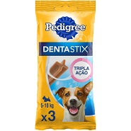
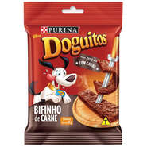
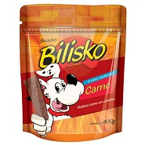

| Pedigree Dentastix |
|---|
|  |
| R$ 7,00 |
O Petisco Pedigree Dentastix para Cães Adultos Raças Pequenas é uma saudável e saborosa forma para o cuidado oral dos cachorros, sendo muito eficiente em manter os dentes e a gengiva saudáveis. Estes snacks, possuem tamanho ideal para ser oferecido aos amiguinhos de porte pequeno entre 5 a 10 kg.
- Indicado para cachorros adultos;
- Está cientificamente testado e aprovado;
- Com baixo teor de gordura;
- Não contém corantes;
- Reduz 80% tártaro e previne doenças na gengiva;
- Funcional textura exclusiva, com ingredientes ativos.
| Doguitos |
|---|
|  |
| R$ 5,00 |
O Petisco Nestlé Purina Doguitos Bifinho de Carne para Cães é nutritivo e muito saboroso. Inspirado nos diversos tipos de carne que serve no rodízio, possui sabor, aroma e textura irresistíveis. Uma ótima opção para treinar ou agradar o seu pet.
- Com 08 bifinhos;
- Delicioso petisco feito com carne fresca;
- É ideal para treinar seu cão ou recompensá-lo;
- Pode ser oferecido a cães de todos os portes e idades.
| Snacks Bilisko |
|---|
|  |
| R$ 28,00 |
O Snacks Bilisko Carne para Cães, foi desenvolvido para proporcionar ao seu amigão uma vida mais saborosa e divertida. Deve ser oferecido ao seu cão como prêmio no adestramento, quando ele se mostrar obediente e também para lhe mostrar o seu afeto.
- Auxilia na higiene bucal;
- Formato atrativo;
- Divertido.